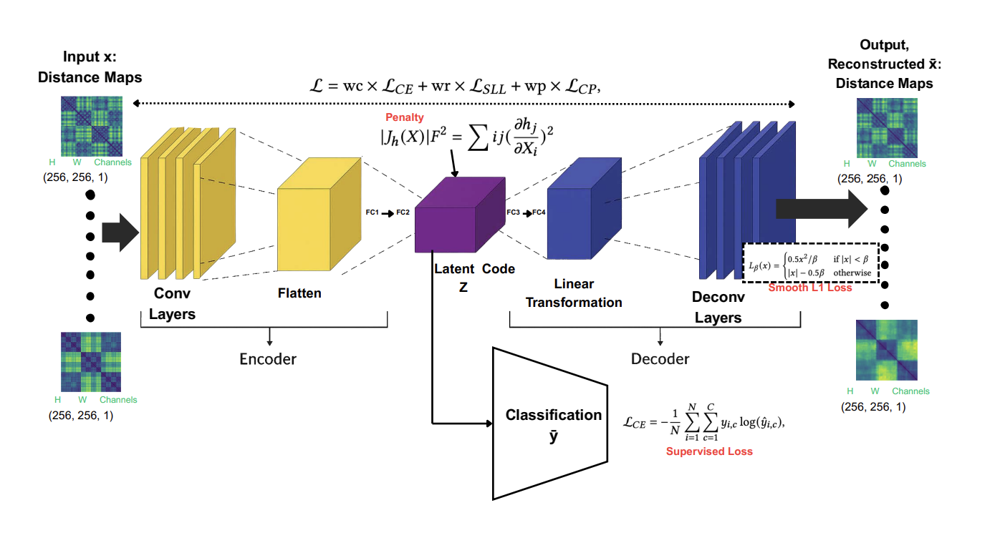
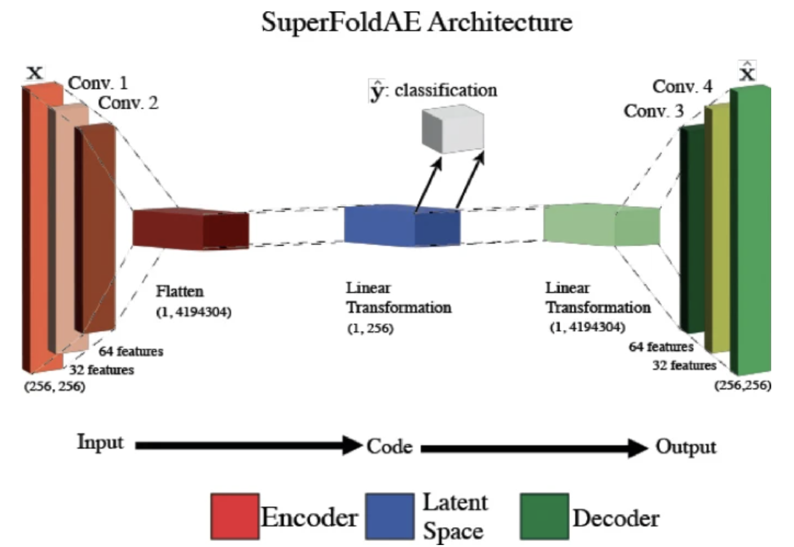
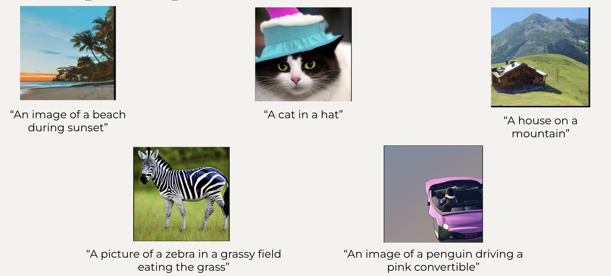
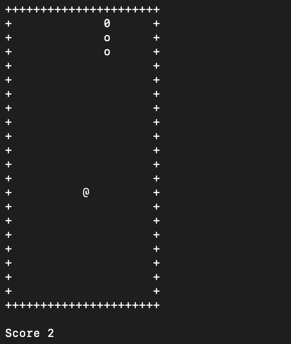

ConSOLAE builds on SuperFoldAE with a contractive supervised autoencoder architecture that learns smooth, noise-invariant latent spaces for protein fold and family classification. It improved out-of-distribution performance on SCOP 2.06 from 22.63% to 54.22% Top-1 accuracy, demonstrating significant advances in generalization. The paper was awarded Best Paper (2nd Place) and accepted for presentation at the ACM BCB CSBW Workshop 2025 in Philadelphia, PA.
Developed a contractive supervised autoencoder that learns smooth, noise-invariant latent spaces for fold and family classification.
Introduced contractive regularization, Smooth L1 reconstruction, and a deeper encoder–decoder structure to stabilize training and capture fine-grained structural features.
Executed large-scale experiments, model training, and evaluation.
Co-authored the paper, which was awarded Best Paper (2nd Place) at the ACM BCB CSBW Workshop 2025.

In this paper, we explore the design and application of deep learning architectures for protein structure prediction, leveraging supervised autoencoders to classify structural folds with enhanced generalization and stability. By incorporating auxiliary reconstruction tasks, we aim to improve the robustness of the representations, tackling some key challenges in complex biological data interpretation. We learned how to utilize a High-Performance Computing (HPC) cluster to efficiently train deep learning models on large-scale protein datasets. The paper is published by Springer as part of the CCIS series and was presented at the Computational Structural Bioinformatics Workshop 2024.
Conducted extensive research on deep learning architectures for protein structure prediction, focusing on supervised autoencoders for fold classification.
Tuned hyperparameters of deep learning models to improve generalization and accuracy, achieving substantial performance improvements on test data.
Collaborated closely with research partners, contributed to scholarly publications, and presented findings at a national workshop.
Authored a successful Professional Development Fund proposal to secure financial support for conference attendance.

This project is a Stable Diffusion text-to-image generator. The project includes an interactive UI in which the user can type into a text box and the image loads onto the side. The UI includes options to adjust the image generation process, such as dimension modifications, negative prompt options, batch size modifications, and more.
Created the application that housed the stable diffusion model and worked on combining the front end with the back-end.

Snake game ran in the terminal, written in C++. The objective is to collect food to grow while avoiding collision with the walls or own tail.
Individual project, all code written by me.